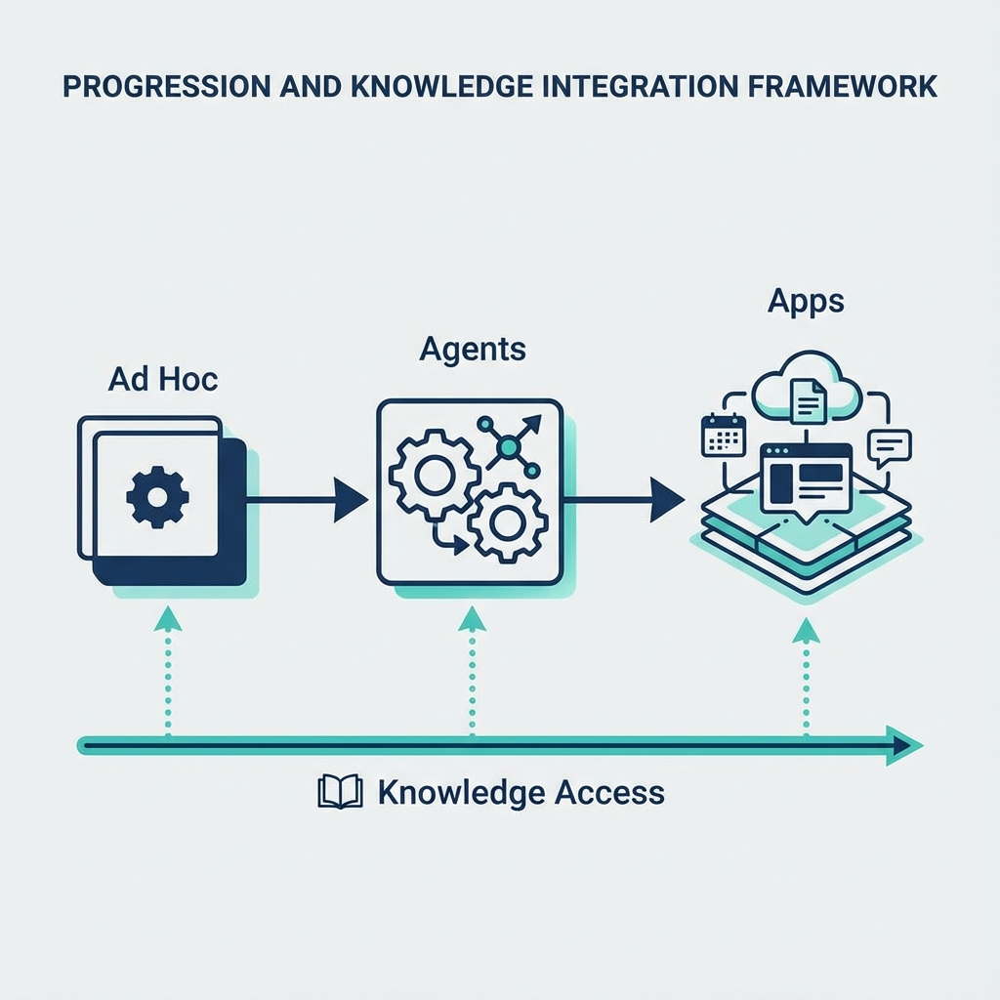
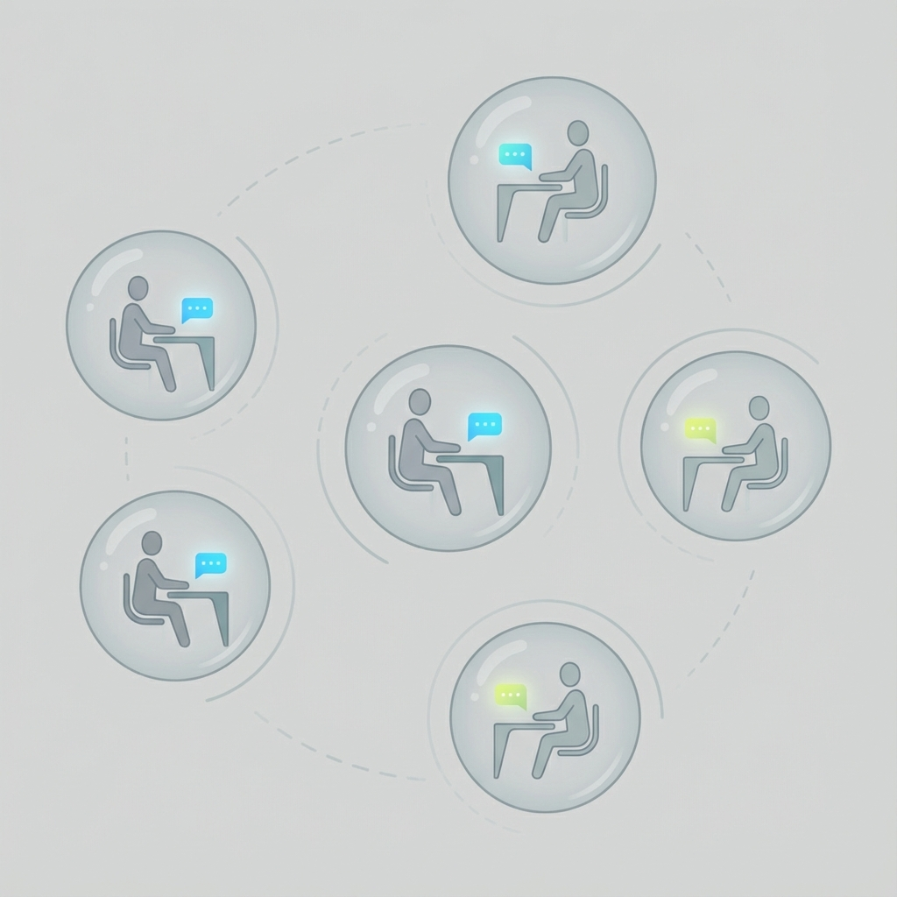
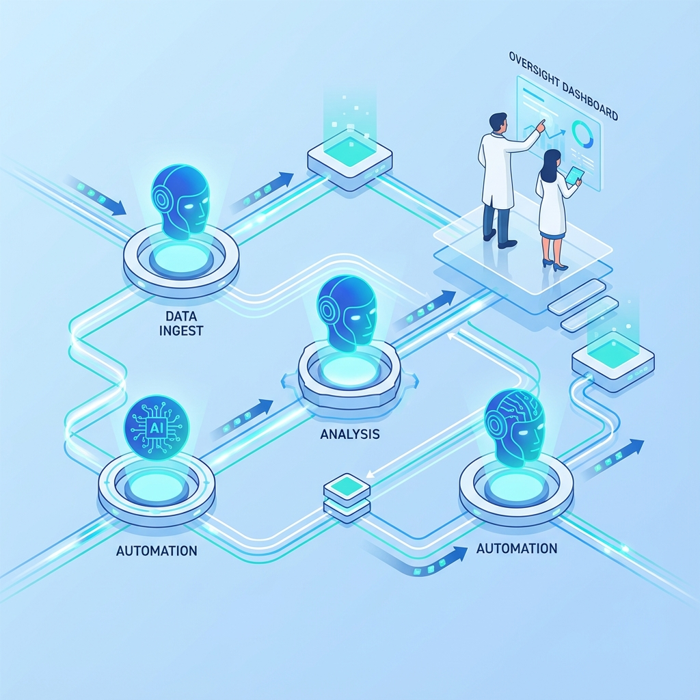
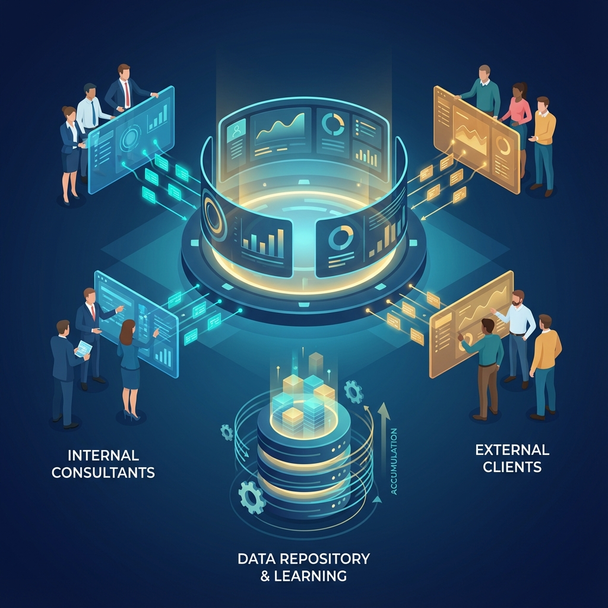

The Problem: Consulting Firms Are Stuck at Stage 1
Most boutique consulting firms have adopted AI in exactly one way: individual consultants using ChatGPT, Claude, or Microsoft Copilot for drafting, research, and analysis. This is useful but limited. It improves individual productivity by 10-20% while leaving the fundamental business model untouched.
The firms advising Fortune 500 companies on digital transformation are themselves stuck in the earliest phase of AI adoption. The irony is not lost on their clients.
The barrier is not awareness or willingness. Partners at mid-sized consulting firms know AI matters. The barrier is the absence of a clear progression model designed for firms without dedicated technology teams, without enterprise data infrastructure, and without the luxury of multi-year transformation budgets.
The 3A Framework provides that model.
Why Now?
The 3A Framework describes a progression that was not practical even two years ago. Several shifts have made this possible:
Agent platforms have matured. Tools like AnyQuest, Agent.ai, and Custom GPT builders allow non-engineers to create sophisticated AI workflows. Building a multi-step research agent no longer requires a development team.
LLM costs have dropped dramatically. What cost hundreds of dollars per task in 2023 now costs pennies. This changes the economics of automating workflows that run hundreds of times per month.
Vibe engineering has emerged. Experienced professionals can now build production software rapidly using AI-assisted development tools like Claude Code, Codex and Cursor. This discipline combines AI coding capabilities with senior engineering practices (testing, planning, code review) to produce maintainable software. Stage 3 is now accessible to firms without traditional engineering teams.
Proven patterns exist. Early adopters have demonstrated what works. The failure modes are known. Firms starting today can learn from others' mistakes rather than discovering them firsthand.
The window for competitive advantage is open but will not stay open indefinitely. Firms that move now will build capabilities and institutional knowledge that laggards will struggle to replicate.
Why Consulting Firms Need a Different AI Adoption Model
Most AI adoption frameworks assume large organizations with dedicated technology teams, data infrastructure, and change management capabilities. They describe transformation journeys that take years and require significant capital investment.
Mid-sized consulting firms, particularly those in Human Capital, Talent Management, Leadership Development, and Organizational Design, face different constraints:
- No dedicated technology team. Partners and consultants are the entire workforce.
- Expertise is the product. Unlike manufacturers or retailers, consulting firms sell judgment and methodology—things that feel inherently human and hard to automate.
- Client relationships are personal. Partners worry that AI adoption signals commoditization to clients who pay premium rates for bespoke advice.
- Scale is measured in people. Growth has always meant hiring more consultants, not deploying more technology.
These constraints demand a different framework. One that acknowledges the realities of boutique firm operations while still providing a clear path forward.
The 3A Framework: Three Stages of AI Adoption
The 3A Framework describes three distinct stages consulting firms move through when adopting AI. Each stage requires different capabilities, produces different outcomes, and demands different mindset shifts from firm leadership.
The stages are sequential: firms must progress through Stage 1 before Stage 2, and Stage 2 before Stage 3. However, there is also a parallel track (Knowledge Access) that can be pursued alongside any stage.

Stage 1: Ad Hoc AI Usage

Definition: Individual consultants using general-purpose AI tools (ChatGPT, Claude, Copilot, Gemini) for personal productivity.
Characteristics:
- Tool selection is individual, not firm-wide
- No standardization of prompts, workflows, or quality control
- AI usage is invisible to clients
- Productivity gains are real but modest (10-20% on specific tasks)
- No change to pricing model, staffing ratios, or service offerings
Common Use Cases:
- Drafting client communications, proposals, and follow-up emails
- Summarizing interview transcripts and research documents
- Generating first drafts of presentations and deliverables
- Preparing for client meetings by synthesizing background materials
- Brainstorming frameworks, hypotheses, and discussion questions
The Limitation: Ad hoc usage treats AI as a personal productivity tool rather than a firm capability. Knowledge stays siloed. Best practices are not shared. The firm captures none of the compounding benefits that come from systematic AI deployment.
Estimated Prevalence: The vast majority of mid-sized consulting firms are at this stage.
Parallel Track: Knowledge Access
Between Stage 1 and Stage 2, some firms invest in internal AI chatbots that search and synthesize firm knowledge. McKinsey's Lilli is the high-water mark: a generative AI tool that scans 100,000+ documents, identifies relevant content, summarizes key points, and connects users to internal experts.
What Knowledge Access solves:
- "Find me similar engagements we've done"
- "What have we written about this topic?"
- "Who in the firm has expertise in X?"
Why this is not Stage 2: The interaction model is still conversational Q&A. Stage 2 is workflow automation: trigger a process, receive a work product. Knowledge Access makes consultants faster at finding information. Stage 2 agents do work on behalf of consultants.
Why large firms invest here first: McKinsey could build Lilli because they already had the knowledge infrastructure: decades of investment in data stewards curating content, sanitizing for confidentiality, and making it searchable. Lilli is an AI layer on existing infrastructure, not a greenfield build.
Why mid-sized firms often skip or defer this: Most mid-sized firms don't have decades of curated knowledge infrastructure. Their IP lives in partner hard drives, scattered folders, and people's memories. Building Knowledge Access means first building the knowledge infrastructure underneath it.
This is valuable work. The knowledge is worth organizing. But as a standalone initiative, it feels endless and the payoff is abstract. "Let's organize all our past deliverables" becomes a multi-month project that never ships.
The alternative path: Many firms reach Knowledge Access capabilities through Stage 2, not before it. Agent development creates forcing functions: "we need case studies structured to make the proposal agent work." The knowledge gets organized in targeted bursts, in service of concrete automation goals. Firms often end up with robust Knowledge Access as a byproduct of Stage 2, not a prerequisite.
Firms can pursue Knowledge Access as a standalone investment, in parallel with Stage 2, or let it emerge from Stage 2 work. There is no single correct sequence. The core progression remains: Ad Hoc → Agents → Apps.
Stage 2: Agents (Internal Productivity Applications)

Definition: Purpose-built AI agents and workflows that automate specific firm processes, deployed across the organization rather than used by individuals.
Characteristics:
- Firm invests in building or configuring AI agents for specific workflows
- Standardized processes replace ad-hoc individual usage
- AI operates on firm data (past deliverables, methodologies, client information)
- Measurable efficiency gains at the firm level (50-75% time reduction on targeted workflows)
- Enables consultants to handle more clients without proportional hiring
How Methodology Gets Encoded:
A common misconception is that firms need to "train" or "fine-tune" AI models on their proprietary methodology. This sounds expensive and technical, something only large firms with data science teams can afford.
The reality is different. Firm methodology gets encoded in prompts, not model weights. When you build an agent that evaluates executive candidates, the scoring rubric and evaluation criteria written into the prompt is your methodology. When you build a research synthesis agent that emphasizes certain factors and formats output in a specific structure, that emphasis and structure is your firm's point of view.
This prompt-based approach has advantages over fine-tuning:
- Transparency: Partners can read the prompts and verify they reflect how the firm actually thinks
- Maintainability: Methodology evolves; prompts can be edited, fine-tuned models cannot
- Speed: Encoding methodology in prompts takes hours or days, not weeks of model training
- Cost: No compute costs for training, no specialized ML expertise required
The work of Stage 2 is largely translation: taking implicit partner expertise ("here's how I evaluate a situation") and encoding it into prompts that produce consistent, methodology-aligned outputs at scale.
Common Use Cases:
- Client and prospect research: Multi-agent systems that gather company background, industry context, competitive landscape, leadership team profiles, and recent news in minutes rather than hours
- Proposal and pitch pack generation: Agents that match prospect characteristics to relevant case studies, pull firm credentials, and assemble customized pitch materials ready for partner review
- Executive and candidate screening: Agents that evaluate candidates against structured criteria, producing scored assessments with reasoning that would take hours to do manually
- Engagement prep and handoffs: Automated meeting briefs that pull relevant context from CRM, past interactions, and research; structured handoff documents when engagements transition between team members
- Knowledge retrieval: AI-powered search across past deliverables, methodologies, and client histories, making institutional knowledge accessible to junior consultants rather than locked in partner memories
The Capability Gap: Moving from Stage 1 to Stage 2 requires someone to build the agents and structure the knowledge. Most boutique consulting firms lack in-house technical talent. Partners are experts in strategy, human capital, or organizational design—not in AI agent development, API integrations, or workflow automation.
This is why firms get stuck. The jump from "use ChatGPT" to "deploy AI agents across the firm" feels like hiring an engineering team or becoming a technology company. Neither is true, but the perception creates paralysis.
The Solution: Partner with specialists who understand both consulting firm operations and AI agent development. The goal is not to build a technology team but to deploy AI capabilities that multiply existing expertise.
Estimated Prevalence: A small minority of mid-sized consulting firms have meaningful Stage 2 implementations.
What Stage 2 Success Looks Like:
One leadership development firm deployed 15+ agents across research, client prep, and administrative workflows, achieving 70% time reduction across these processes. Consultants now handle 3x the client load without proportional hiring. Another management consulting firm automated pitch pack creation with a 4-agent system, reducing the process from 4-6 hours to 30 minutes per prospect.
Stage 3: Apps (Services as Software)

Definition: Integrated AI-powered platforms that orchestrate workflows, persist engagement data, and can be exposed to clients as products, creating revenue streams beyond billable hours.
The Problem Stage 3 Solves:
Stage 2 agents, while powerful, create fragmentation. You run an agent, it produces output, you copy that output into a Word doc or PowerPoint, then you run another agent. Work products scatter across files and folders. Engagement data doesn't accumulate anywhere useful. Each project starts from scratch in terms of what the system "knows."
Stage 3 moves from fragmented agents to integrated systems:
- Workflow orchestration: Multiple agents working together in designed sequences, not ad-hoc copy-paste between tools
- Unified interface: A consistent UI for interacting with the system, not jumping between ChatGPT, agent platforms, and Google Docs
- Persistent data layer: Engagement data, outputs, and client information stored in structured repositories
- Long-running project support: The system maintains state across weeks or months of an engagement, not just single sessions
- AI flywheel: As engagements accumulate in the repository, the system gets smarter. Past work informs future work. The firm's collective experience becomes queryable and actionable.
The Business Model Shift:
The investment in Stage 3 infrastructure gets justified by new revenue: client-facing products with subscription or usage-based pricing. But the platform you build serves dual purposes:
- Internal: Consultants use it to run engagements, solving the fragmentation problem and feeding the knowledge flywheel
- External: The same platform (or a scoped version) becomes a product clients pay for
Your internal consultants are the first users. They validate the workflows, catch the gaps, and refine the product through real engagement usage. Once proven internally, you expose it to clients. This is not building two separate things. It is one platform with different permission levels and interfaces.
Characteristics:
- Firm IP and frameworks become software products
- Clients interact with AI applications, not just consultants
- Revenue model shifts from time-based to subscription or usage-based
- Expertise scales without proportional consultant time
- Engagement data accumulates and compounds firm intelligence over time
- Firm becomes a hybrid: consulting practice plus software business
Common Use Cases:
- Leadership readiness diagnostics: Clients complete AI-guided assessments based on your proprietary framework, receiving immediate feedback and development recommendations without requiring consultant time for the initial evaluation
- Methodology training and reinforcement: Interactive applications that teach clients (or their teams) to apply your frameworks, with AI-generated practice scenarios and feedback that reinforce learning between consulting sessions
- Ongoing talent monitoring: Dashboards that track leadership pipeline health, succession readiness, or engagement scores over time, surfacing AI-generated insights and alerts rather than requiring periodic consultant check-ins
- Candidate evaluation tools: Self-service platforms where client HR teams apply your assessment methodology to internal candidates, with the AI enforcing your evaluation criteria and producing structured reports
- Engagement workspaces: Unified platforms where long-running projects live, with all research, deliverables, client feedback, and AI-generated insights persisted and queryable across the life of the engagement
The Mindset Shift: Stage 3 requires partners to see themselves as product builders, not just advisors. This is the hardest transition. Consulting partners built careers on personal relationships and bespoke advice. Productization feels like commoditization.
The reframe: Services as Software does not replace high-touch consulting. It extends the firm's reach to clients and use cases that were previously uneconomical to serve. A leadership development firm might offer full executive coaching engagements at premium rates while also offering a subscription-based AI coaching tool for emerging leaders at a fraction of the price. And every interaction with that tool feeds data back into the system that makes the consultants more effective.
The Reality Check: Stage 3 means becoming a software company, at least partially. This requires capabilities consulting firms typically lack: product management thinking, vibe engineering (using AI-assisted development tools like Claude Code or Cursor to build production software while maintaining senior engineering discipline around testing, planning, and code review), beta customer acquisition, and eventually go-to-market for a product rather than a service. The progression looks like:
- Build an MVP of the integrated platform for internal consultant use
- Refine through real engagements, letting consultants validate workflows and surface gaps
- Recruit beta clients (often existing consulting clients) to test the external-facing version
- Invest in product GTM only after internal and external validation
Firms that skip straight to "build the full product" without MVP validation waste significant resources. Firms that never move beyond "we should productize this someday" miss the window entirely.
Estimated Prevalence: Very few mid-sized consulting firms have launched Stage 3 offerings.
What Stage 3 Looks Like in Practice:
One talent consulting firm built an MVP mobile and web application to teach clients their proprietary framework. Internal consultants used it first, refining the workflows and validating the approach. After internal validation, they recruited beta clients from their existing base before considering broader market launch.
Where Firms Get Stuck (And Why)
The Stage 1 to Stage 2 Trap
The problem: Capability gap. Firms know what they want to automate but lack the people to build it.
What it feels like: "We should automate our research process, but we'd need to hire developers, and that's not who we are."
The misconception: Building AI agents requires becoming a technology company.
The reality: Modern no-code and low-code agent platforms (like AnyQuest, Agent.ai, or custom GPTs) dramatically reduce the technical barrier. The constraint is not engineering talent. It is someone who understands both the consulting workflow and the AI tooling well enough to connect them.
The solution: Engage a specialist who can translate consulting processes into AI agent workflows. A typical Stage 2 implementation (automating 3-5 core workflows) takes weeks, not months, and costs a fraction of a single consultant's annual salary. Knowledge organization happens along the way, driven by what the agents need to function.
Stage 2 Failure Modes
Even firms that attempt Stage 2 can fail to capture its value:
Agents remain separate from the workflow. The agents work, but outputs still land in Word docs and PowerPoints. The consultant remains the glue between different steps of the engagement. This captures some efficiency but misses the compounding benefits of integrated workflows.
Change management is underestimated. Building agents doesn't guarantee adoption. Consultants have existing workflows, habits, and skepticism. Without deliberate change management, tools sit unused regardless of how well they work.
No feedback loop. When agents produce imperfect outputs, consultants take their ball and go home rather than flagging what went wrong. The agents never improve. The firm concludes "AI doesn't work for us" when the real problem was implementation.
Senior expertise stays locked in heads. The best agents encode how top performers actually work. But senior consultants rarely have time or incentive to articulate their methods. Without a deliberate process to extract and formalize that expertise, agents end up encoding generic approaches rather than the firm's real differentiation.
The Stage 2 to Stage 3 Trap
The problem: Business model identity crisis, plus underestimating the architectural shift required.
What it feels like: "If we turn our methodology into software, are we still a consulting firm? And where do we even start?"
The misconception: Productization commoditizes expertise and undermines premium positioning. Or: we need to build a client product from scratch, separate from how we work internally.
The reality: The most valuable consulting firms have always had proprietary methodologies. Software is simply a new delivery mechanism for that IP. Stage 3 is the next evolution: methodology delivered through software, not just PowerPoint.
More importantly, the Stage 3 platform is not a separate thing you build for clients. It is an integrated system your consultants use first. They validate it, refine it, and generate the data that feeds the AI flywheel. The client-facing product is the same platform with different access levels. You solve internal fragmentation and create external revenue with one investment.
The solution: Start by building an MVP of an integrated engagement platform for internal use. Pick one workflow or engagement type. Let consultants use it on real projects. Once it works internally, identify which elements could be exposed to clients as a self-service or lower-touch offering. Recruit beta clients from your existing base to validate. Only after internal and external validation should you invest in product GTM: positioning, pricing, sales motion, and customer success. The sequence matters. Most failed productization attempts skip internal validation and jump straight to building the "client product."
Stage 3 Failure Modes
Stage 3 attempts fail for different reasons than Stage 2:
Vibe coding instead of vibe engineering. Firms use AI tools to quickly build a prototype, then mistake it for a product. There is no plan for production software: no testing, no maintainability, no roadmap. The prototype impresses in demos but fails in real use. Vibe engineering requires senior-level discipline; vibe coding produces disposable experiments.
Underestimating what it takes to bring a product to market. The shift from services to services-plus-product is not trivial. Products require roadmaps, support, documentation, pricing strategy, sales motion, and customer success. Firms accustomed to bespoke engagements are blindsided by the operational demands of a product business.
"Build it and they will come" thinking. Firms invest heavily in building the "full vision" without validating demand. Lean startup principles apply: build an MVP, test with real users, iterate based on feedback. Most failed productization attempts skip this loop entirely.
Internal resistance splits the firm. Consultants may feel threatened by productization. The firm divides into those who embrace the change and those who resist it. Without leadership alignment and clear communication about how Stage 3 complements (rather than replaces) consulting work, political battles consume the initiative.
Implications for Firm Strategy
Staffing and Talent
| Stage | Talent Implication |
|---|---|
| Stage 1 | Hire consultants who are AI-literate and self-directed learners |
| Stage 2 | Either develop internal AI implementation capability or establish ongoing partnership with AI specialists |
| Stage 3 | Add product management and vibe engineering capabilities; as the product scales, expect to build or contract for dedicated product, engineering, and product marketing roles |
Pricing and Revenue Model
| Stage | Revenue Model |
|---|---|
| Stage 1 | Traditional billable hours or project-based fees; AI improves margins but does not change pricing |
| Stage 2 | Potential for value-based pricing as efficiency gains allow faster delivery; consider fixed-fee arrangements |
| Stage 3 | Subscription revenue, usage-based pricing, or hybrid models combining software access with consulting support |
Competitive Positioning
| Stage | Market Position |
|---|---|
| Stage 1 | Undifferentiated on AI; competing on traditional consulting factors (reputation, relationships, expertise) |
| Stage 2 | Operational advantage; faster delivery, more capacity, better margins than competitors stuck at Stage 1 |
| Stage 3 | Category differentiation; offering something competitors cannot match without similar product investments |
How to Assess Your Firm's Current Stage
You are at Stage 1 if:
- AI tool selection is left to individual consultants
- There is no firm-wide standard for AI-assisted workflows
- You could not describe your "AI capability" to a client
- Productivity gains from AI are real but unmeasured
You are at Stage 2 if:
- You have deployed at least one AI agent or workflow used by multiple consultants
- There are documented processes for AI-assisted work
- You can quantify efficiency gains (e.g., "research time reduced by 70%")
- AI capabilities are part of how you describe your firm's operations
You are at Stage 3 if:
- You offer at least one client-facing AI-powered product or tool
- Revenue includes subscription, licensing, or usage-based components
- Clients derive value from your firm without direct consultant involvement
- Engagement data persists in structured repositories that inform future work
- You think about "users" as well as "clients"
The Path Forward for Mid-Sized Consulting Firms
The 3A Framework is not prescriptive about destination. Not every firm should pursue Stage 3. Services as Software requires appetite for product development, comfort with recurring revenue models, and willingness to invest in capabilities outside traditional consulting.
But every firm should move beyond Stage 1. The efficiency gains from Stage 2 are too significant to ignore. Firms that systematize their AI usage will serve more clients, deliver faster, and operate at higher margins than those relying on ad hoc individual adoption.
The question is not whether to adopt AI. The question is whether your firm will approach it systematically or leave it to chance.
About This Framework
The 3A Framework was developed by Vyceral Solutions through hands-on engagements helping mid-sized consulting firms in Human Capital, Talent Management, Leadership Development, and Organizational Design adopt AI. It reflects patterns observed across multiple firm transformations, not theoretical speculation.
Vyceral Solutions helps consulting firms progress from Stage 1 to Stage 2 by building the AI agents and workflows that multiply consultant capacity without requiring firms to hire technical teams. For firms exploring Stage 3, Vyceral provides rapid MVP development using vibe engineering principles to test productization hypotheses before major investment.
Ready to Progress Beyond Stage 1?
To discuss how the 3A Framework applies to your firm, contact Vyceral Solutions:
- Email: vikram.ekambaram@vyceralsolutions.com
- Website: vyceralsolutions.com/consulting-transformation